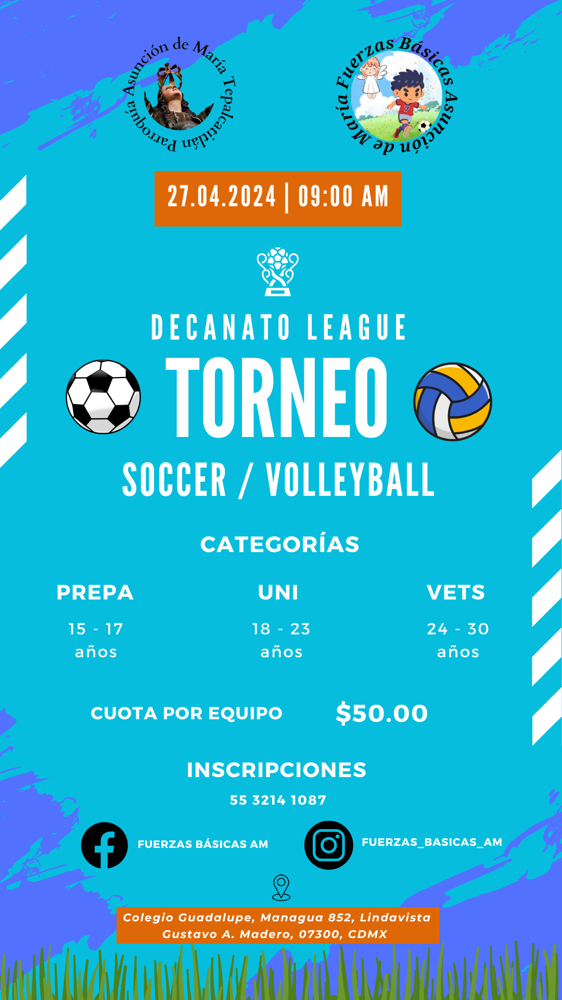

Torneo de Fútbol y Voleibol 2024
En abril de 2024, Fuerzas Básicas AM organizó el Torneo de Fútbol y Voleibol en colaboración con los grupos parroquiales del decanato. Este evento reunió a jóvenes apasionados por el deporte en una jornada llena de emoción, competencia y trabajo en equipo.
El torneo no solo promovió el deporte y la sana convivencia, sino que también fortaleció los lazos entre las comunidades parroquiales, destacando valores como la unidad, el respeto y el esfuerzo.
Fotos del Evento